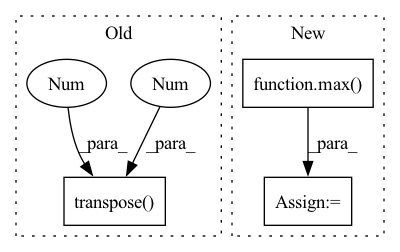

Pattern ID :32138
Before Change
interval = 16
idx = torch.arange(0,T,interval)
rpn_inputs = inputs[:,:,idx]
rpn_inputs = rpn_inputs.transpose(1 ,2 ) .contiguous().view(N*(T//interval),C,H,W)
with torch.no_grad():
proposals = rpn(rpn_inputs)
proposals = proposals.view(N,T//interval,10,4)After Change
proposals = proposals[:len(inputs)]
outputs = model(inputs, proposals.detach())
// update to the largest batch_size
max_N = max( N, max_N)
else:
outputs = model(inputs)
loss = criterion(outputs, targets)
acc = calculate_accuracy(outputs, targets)In pattern: SUPERPATTERN
Frequency: 3
Non-data size: 3
Instances Fragment ID: 94090937
Project Name: jd730/strg
Commit Name: 439d8eb70d35c5cc16fdabda09a67e2149af8c8a
Time: 2020-06-12
Author: jdhwang730@gmail.com
File Name: training.py
M Class Name: AnonimousClass
N Class Name: AnonimousClass
M Method Name: train_epoch(12)
N Method Name: train_epoch(12)
M Parent Class:
N Parent Class:
M File Name: training.py
N File Name: training.py
M Start Line: 57
M End Line: 62
N Start Line: 50
N End Line: 76
Before Change
pad_sequence([datapoint[2] for datapoint in batch], batch_first=True),
torch.stack([datapoint[3] for datapoint in batch]).squeeze(1),
torch.stack([datapoint[4] for datapoint in batch]),
pad_sequence([datapoint[5].transpose(0 , 1 ) for datapoint in batch], batch_first=True),
)
else:
// text, text_len, speech, speech_len, priorAfter Change
def collate_and_pad(batch):
max_text = max([datapoint[1] for datapoint in batch])
max_spec = max( [datapoint[3] for datapoint in batch])
if type(batch[0][-1]) is int:
if len(batch[0]) == 7:
// text, text_len, speech, speech_len, speaker_emb, prior, language_id
return (pad_sequence([datapoint[0] for datapoint in batch], batch_first=True), Fragment ID: 94090968
Project Name: digitalphonetics/ims-toucan
Commit Name: ff19cb503c4a364c272e83e1e03581f01092f6b9
Time: 2021-10-12
Author: florian.lux@ims.uni-stuttgart.de
File Name: TrainingInterfaces/Text_to_Spectrogram/Tacotron2/tacotron2_train_loop.py
M Class Name: AnonimousClass
N Class Name: AnonimousClass
M Method Name: collate_and_pad(1)
N Method Name: collate_and_pad(1)
M Parent Class:
N Parent Class:
M File Name: TrainingInterfaces/Text_to_Spectrogram/Tacotron2/tacotron2_train_loop.py
N File Name: TrainingInterfaces/Text_to_Spectrogram/Tacotron2/tacotron2_train_loop.py
M Start Line: 84
M End Line: 110
N Start Line: 76
N End Line: 112
Before Change
batch_size = target.size(0)
_, pred = output.topk(topk, 1, True, True)
pred = pred.transpose(0 , 1 )
correct = pred.eq(target.view(1, -1).expand_as(pred))
// TODO: support tuple topk
// res = []After Change
def accuracy(output, target, topk=(1,)):
maxk = min(max( topk) , output.size()[1])
batch_size = target.size(0)
_, pred = output.topk(maxk, 1, True, True)
pred = pred.t() Fragment ID: 94090945
Project Name: oneflow-inc/libai
Commit Name: 371360b9b903675607d2f92544962eb8b2330a17
Time: 2022-02-13
Author: 48727989+rentainhe@users.noreply.github.com
File Name: libai/evaluation/cls_evaluator.py
M Class Name: AnonimousClass
N Class Name: AnonimousClass
M Method Name: accuracy(3)
N Method Name: accuracy(3)
M Parent Class:
N Parent Class:
M File Name: libai/evaluation/cls_evaluator.py
N File Name: libai/evaluation/cls_evaluator.py
M Start Line: 31
M End Line: 49
N Start Line: 28
N End Line: 36